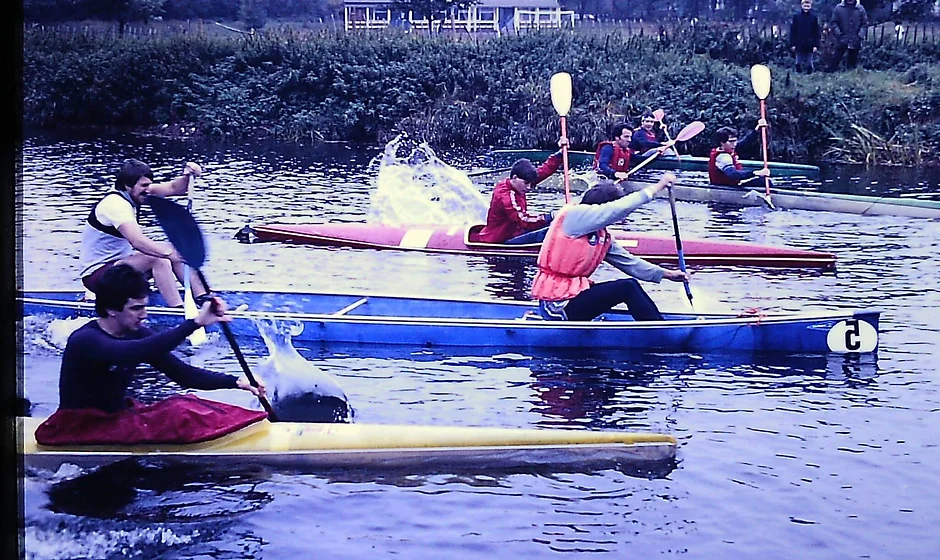

Our mission is to provide unforgettable moment for all adventurer in every levels.


Our mission is to provide unforgettable moment for all adventurer in every levels.
Founded in 2024 by an adventurous family, Fastblue water Rafting began as a small-scale operation with a passion for white-water rapids. Over time, they transformed into an industry leader, offering personalized experiences to thrill-seekers worldwide.
Their commitment to safety, sustainability, and community engagement set them apart. From local rivers to international expeditions, Whhitewater Rafting continues to inspire awe and connect people with nature—one rapid at a time.